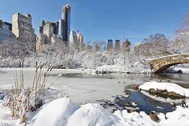
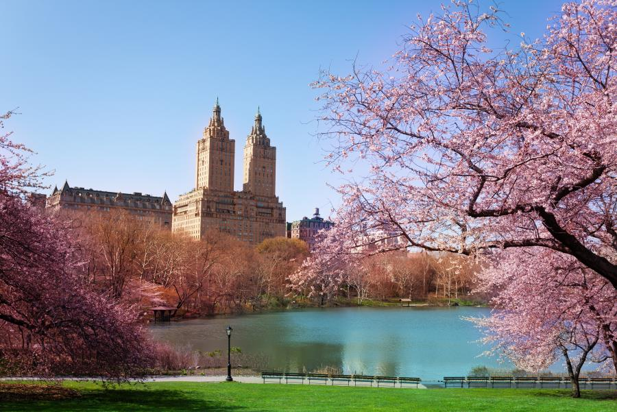
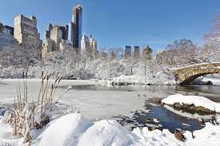
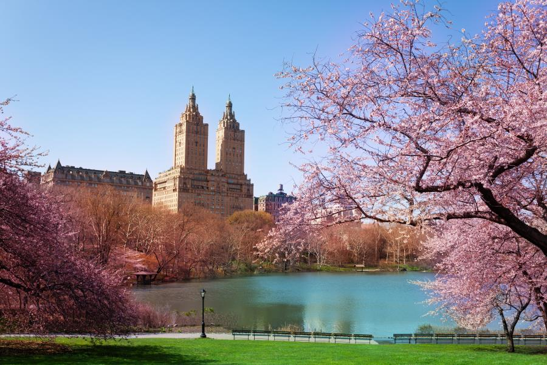

Central Park is an urban park between the Upper West Side and Upper East Side neighborhoods of Manhattan in New York City, and the first landscaped park in the United States. It is the sixth-largest park in the city, containing 843 acres (341 ha), and the most visited urban park in the United States, with an estimated 42 million visitors annually as of 2016. It is also one of the most filmed locationsin the world. The creation of a large park in Manhattan was first proposed in the 1840s, and a 778-acre (315 ha) park approved in 1853. In 1858, landscape architects Frederick Law Olmsted and Calvert Vaux won a design competition for the park with their "Greensward Plan". Construction began in 1857; existing structures, including a majority-Black settlement named Seneca Village, were seized through eminent domain and razed. The park's first areas were opened to the public in late 1858. Additional land at the northern end of Central Park was purchased in 1859, and the park was completed in 1876. After a period of decline in the early 20th century, New York City parks commissioner Robert Moses started a program to clean up Central Park in the 1930s. The Central Park Conservancy, created in 1980 to combat further deterioration in the late 20th century, refurbished many parts of the park starting in the 1980s.